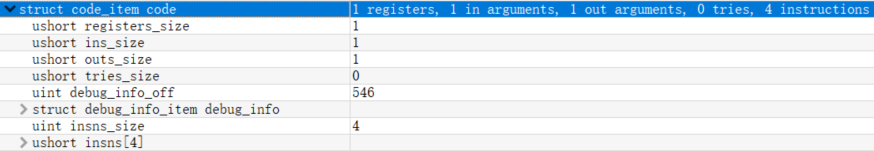

Android加固系列-1-Dex101
根据被加固的对象，Android加固可以分为两大类：Java层加固与Native层加固。Java层加固，主要针对的是Dex文件。因此，了解Dex是理解Java层加固的基础。
首先我们回顾一下常见的apk逆向流程：解压apk得到Dex文件，使用dex2jar将Dex文件转换为Jar，再用jadx反编译Jar查看Java源码。
而正向编译流程，是先将Java源码编译成多个Class文件，再将他们合并成Jar或者Dex。
从组成结构上，Dex可以对标Jar，二者均是由多个Class文件组成。而从文件类型上，作为Dalvik虚拟机的可执行文件，Dex对标的是作为JVM可执行文件的Class。
下面我们就看一下如何将Class转换为Dex。编写Hello.java:
1 | public class Hello { |
执行如下命令：
1 | javac Hello.java |
即可得到Hello.dex文件。
下面，我们使用010 Editor解析Dex文件并进行分析其格式。
可见，一个基本的Dex文件分为：
- 文件头header
- 索引区，包含字符串string、类型type、方法原型proto、域field和方法method的索引
- 类定义区class_def
- 整个文件的索引map
dex_header
首先我们来看header，它包含如下内容：
其中：
magic：魔数，Dex文件的标识，其值为dex\n035\0。脱壳脚本便是通过搜索该值的方式寻找Dex文件。checksum：文件校验码，使用Alder32算法校验文件剩余部分的正确性。signature：签名，使用SHA1算法计算文件剩余部分的签名。file_size：Dex文件大小。header_size：Dex文件头大小。endian_tag：大小端标签。标准Dex文件为小端：
link_size和link_off：Dex文件链接部分的大小和偏移。map_off：Dex文件map部分的偏移值。- 其余为Dex文件剩余部分的大小及偏移。
dex_string_ids
索引区第一部分，字符串索引，其个数为header中string_ids_size的值，起始地址为header中string_ids_off的值：
深入来看各条目，以<init>为例：
只有一个string_data_off，既然是索引区，其存放的即为字符串的真正地址：
由于是小端存储，我们来到176h：
确实为<init>。继续分析该处：
可见由两部分组成，utf16_size和data。不难理解，两个值分别代表该字符串的大小和内容。
这里的
utf16_size，数据类型为uleb128，即unsigned little endian base 128，用于避免int类型恒为4字节而产生的内存浪费。其原理为：每个字节的最高位为标志位，1则下一个字节继续表示，0则结束。类似报文的分片。
dex_type_ids
索引区第二部分，类型索引，其个数为header中type_ids_size的值，起始地址为header中type_ids_off的值：
分析到这里时，类比string，我们举一反三：type中的各条目，为type_data_off，存放着类型的真正地址。
深入验证一下，以Hello为例：
发现和想象中的不太一样，并没有type_data_off，取而代之的是description_idx，此处的值为0x03：
根据其描述："String ID for this type descriptor"，可知与string有关，我们回头看string部分：
发现string_id[]恰恰为”LHello;”。我们再取type_id[]，java.io.PrintStream，进行验证，其description_idx为0x04：
匹配string_id[]：
可知，description_idx代表的是上一部分string_id_list的索引值。我们可以体会到这样设计的用意，类型本身也是字符串，因此直接引用已经存储好的字符串即可，无需额外浪费空间。
dex_proto_ids
索引区第三部分，方法原型索引，其个数为header中proto_ids_size的值，起始地址为header中proto_ids_off的值：
深入来看：
由三部分组成。shorty_idx和return_type_idx均以idx结尾，根据前文经验和其描述，可知前者方法签名指向string的索引，后者返回值指向type的索引。
关于方法签名，在中，签名格式为
(参数1类型;参数2类型...;)返回值类型，而Dex文件中更为简略，为返回值类型+参数1类型+参数2类型...。
第三个字段parameter_off，为方法参数的偏移，此处void()无参为0。我们再找一个有参数的方法：
偏移值为：
来到168h：
size代表参数个数，参数类型为type_idx指向的type索引位置。
dex_field_ids
索引区第四部分，域索引，其个数为header中field_ids_size的值，起始地址为header中field_ids_off的值：
深入来看：
大同小异，三个idx分别指向type、type、string的索引，分别表示域所属类的类型、域类型、域名。
dex_method_ids
索引区最后一部分，方法索引，其个数为header中method_ids_size的值，起始地址为header中method_ids_off的值：
三部分，分别指向type、proto、string的索引，分别表示方法所属类的类型、方法原型、方法名。
至此，索引区的分析结束。我们可以发现，dex_string_ids是整个索引区的基石，由它延伸出一个个更为精准的索引。
dex_class_defs
类定义区，其个数为header中class_def_size的值，起始地址为header中class_def_off的值：
深入来看：
其中：
class_idx：类的类型，指向type的索引。access_flags：类的访问类型，如public、private、protected等。superclass_idx：类的父类类型，指向type的索引。interfaces_off：类的接口偏移。source_file_idx：类的源文件信息，指向string的索引。annotations_off：类的注释偏移。class_data_off：类的数据偏移。
前六个都比较好理解，而最后一个，类的数据，具体包含什么呢？我们前往偏移处看一下：
可见，四个size，分别代表了该类四种属性的个数。该类有两个direct_method，因此还包含了一个详细描述它们的encoded_method_list：
对于每一个method，包含：
method_idx_offs：方法信息，指向method的索引。access_flags：方法的访问类型。code_off：方法代码偏移。
我们继续追踪到代码偏移处：

可知，存储了寄存器数目、参数数目等信息。
至此，整个Dex文件的格式分析完毕。
应用
首尾呼应，理解Dex，是理解Java层加固的基础。除此之外，学会解析Dex，也可以衍生出其他妙用。
在收集Android app信息时，常见的分析框架如、，其采用的方式为反编译app后，逐行读取源码进行正则匹配。固然，此种方式收集的信息较全，但在面对某些小型场景，如只希望确定该app是否调用某API时，该方案便显得有些笨拙。
而理解Dex后，我们便可以采用解析app Dex文件string区的方式来快速收集该app包含的字符串，并在结果中定位目标，大大提高效率。
Android加固系列-1-Dex101